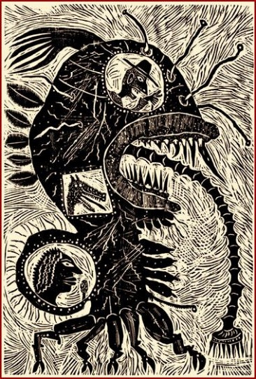

17 : July, 2011
Home
Aboute
Current Broadsheet
Archive
Author Index
Search
Friendes
Submitte
Blogge
Facebooke
Twitter
Contents
Editorial
Always a Stranger
by
Gene Auprey
Love Has a Southern Flavor
by
Michael Burch
Counting Greguerías Sheep
by
Stephen Collington
A Hymne to God the Father
by
John Donne
Sight-Reading
by
Stephen Edgar
Leatherback
by
Martin Elster
Saving the World
by
Angela France
A Sort of Homecoming
by
Tracey Gratch
The Banyan Tree And The Bathers
by
R. Nemo Hill
Apostrophe to Death
by
Juleigh Howard-Hobson
Powerless
by
Janet Kenny
Perchance to Run
by
Jean L. Kreiling
Communicants
by
Ralph La Rosa
Athens
by
David W. Landrum
Lost Letters
by
Tim Love
Three Songs from the South Bank
by
Damon Moore
The Furnace
by
Eric Norris
Vellum
by
Geoff Page
The Glassblower
by
Stephen S. Power
Learning to Paint Clouds
by
Philip Quinlan
I, Hokusai, Reply
by
Philip Quinlan
Bearded
by
Marybeth Rua-Larsen
Three Wishes
by
Elsa Louise von Schreiber

Image by
Mark Bulwinkle